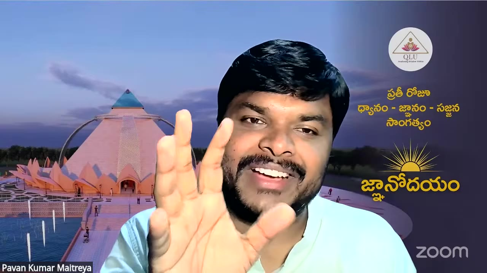

01 · ఈ నెల ఆధ్యాత్మిక జ్ఞానసారం · పూర్తి కథనం
కలిసికట్టుగా కరుణామయ సమాజ నిర్మాణానికి అడుగులు వేద్దాం
జ్ఞానోదయం 545వ రోజులో M. Pavan Kumar గారు Speak Peace శ్రేణిలో కలిసి సామాజిక మార్పును సృష్టించడం అనే అంశాన్ని వివరించారు. ఈ ప్రసంగం వ్యక్తుల మధ్య సంభాషణను కేవలం మాటల మార్పిడిగా కాకుండా భావాలు, అవసరాలు, అవగాహనతో కూడిన సంబంధంగా చూడమని ఆహ్వానిస్తుంది. మనం వెంటనే తీర్పు చెప్పే సందర్భాల్లో వినడానికి స్థలం ఎలా కల్పించాలి, మన అవసరాలను ఇతరులపై ఒత్తిడి లేకుండా ఎలా వ్యక్తపరచాలి అనే ప్రశ్నలు ఇందులో ప్రధానంగా నిలుస్తాయి. వక్త ప్రస్తావించిన ఉదాహరణలు, వ్యక్తిగత అనుభవాలు, ఆచరణకు సంబంధించిన సూచనలను కింది విభాగాల్లో అంశాల వారీగా అందిస్తున్నాం.
ప్రసంగకర్త: M. Pavan Kumar
అంశం: Speak Peace — Creating Social Change Together
మూల వీడియో: https://www.youtube.com/watch?v=jAkdT9O5QAA
సామాజిక మార్పుకు సంబంధమే పునాది
సమాజంలో అన్యాయం కనిపించినప్పుడు వెంటనే తప్పు చేసినవారిని గుర్తించి విమర్శించడం సులభం. కానీ మార్పు నిలకడగా ఉండాలంటే పరస్పర అనుసంధానం అవసరమని వక్త వివరించారు. వ్యక్తిగత సంబంధాల్లో నేర్చుకున్న సహానుభూతిని కుటుంబం, సంస్థలు, సామాజిక సమస్యల పరిష్కారానికి కూడా విస్తరించవచ్చనే దృక్కోణం ఈ సమావేశానికి కేంద్రం.
శిశువు పట్ల సహజంగా చూపే కరుణ
చిన్నపిల్లల అవసరాలను పెద్దలు చాలాసార్లు ఓపికతో గమనిస్తారు. పిల్లవాడు ఏడ్చినప్పుడు అతని ప్రవర్తనను శత్రుత్వంగా కాకుండా ఏదో అవసరానికి సంకేతంగా చూస్తారు. అదే దృష్టిని పెద్దవారి ప్రవర్తనకూ తీసుకురావచ్చా అనే ఆలోచనను వక్త ముందుకు తెచ్చారు. కోపంగా మాట్లాడుతున్న వ్యక్తి మాటల వెనుక కూడా గుర్తింపుకోసం లేదా భద్రతకోసం ఉన్న అవసరం ఉండవచ్చు.
న్యాయం కోరేటప్పుడు నిందల ఉచ్చు
అన్యాయం గురించి మాట్లాడే సందర్భాల్లో ఒకరి కోపాన్ని మరొకరు పెంచుకుంటూ పోవచ్చు. దీనివల్ల సమస్యపై స్పష్టత కన్నా వ్యక్తులపై శత్రుత్వం పెరిగే అవకాశం ఉంటుంది. వక్త దృష్టిలో సమస్యను దాచిపెట్టడం పరిష్కారం కాదు; జరిగిన సంఘటన, దాని ప్రభావం, అందరికీ అవసరమైన మార్పు గురించి స్పష్టంగా మాట్లాడటం అవసరం.
కుటుంబంలోనే కనిపించే విభేదాలు
కొన్నిసార్లు మన ఎదుగుదలను అర్థం చేసుకోలేని వారు మనకు అత్యంత సన్నిహితులే కావచ్చు. అప్పుడు వారిని శత్రువులుగా గుర్తించడంకన్నా వారి భయాలు, అలవాట్లు, అనుభవాలను తెలుసుకోవడానికి ప్రయత్నించడం ఉపయోగకరం. మన అవసరాలను కూడా అణచివేయకుండా చెప్పాలి. అంగీకారం వెంటనే రాకపోయినా సంబంధాన్ని గౌరవంగా కొనసాగించడానికి ఈ పద్ధతి దోహదపడుతుంది.
సహనానికి కూడా సమయం అవసరం
గాయపరిచిన వ్యక్తి పట్ల వెంటనే కరుణతో స్పందించడం అందరికీ సాధ్యం కాకపోవచ్చని సమావేశంలో వ్యక్తిగత అనుభవాల ద్వారా వెల్లడైంది. కొందరికి భావాలను అర్థం చేసుకుని మళ్లీ మాట్లాడటానికి ఎక్కువ సమయం పడుతుంది. NVC సాధనలో ఈ ప్రక్రియను బలవంతం చేయకుండా, మన పరిమితులు మరియు భద్రతను గౌరవించడం కూడా ముఖ్యమైన ఆచరణాత్మక అంశం.
సమావేశం ఫిర్యాదుల వద్దే ఆగిపోకూడదు
సామాజిక సేవ కోసం కలిసిన వ్యక్తులు సమస్యలను మళ్లీ మళ్లీ చెప్పుకుంటూ సమయాన్ని గడిపేస్తే ఫలితం రాదని పవన్ కుమార్ గారు వివరించారు. సమస్య ఏమిటో వినడం అవసరమే; కానీ దాని తరువాత సాధ్యమైన పరిష్కారాలు, ఎవరు ఏ పని చేపడతారు, ఎప్పటికి పూర్తి చేస్తారు అనే అంశాలకు రావాలి. బాధ్యతలు, కాలపరిమితులు లేని సమావేశం ఎంతసేపు జరిగినా మార్పు మొదలుకాకపోవచ్చని ఆయన హెచ్చరించారు.
స్వచ్ఛంద సేవకు కుటుంబ సమయాన్ని కేటాయించి వచ్చిన వారి శక్తిని గౌరవించడం కూడా ఈ బోధనలో భాగం. సమావేశాన్ని సానుకూలంగా ముగించడం అంటే సమస్యను చిన్నదిగా చూడడం కాదు. అందరూ కలిసి చేయగల తదుపరి చర్యను స్పష్టంగా నిర్ణయించడం. ఇది సామాజిక మార్పును ఒక ఆదర్శంగా కాకుండా ఆచరణలోకి తీసుకొచ్చే ముఖ్యమైన పద్ధతి.
మన అవసరాన్ని చెప్పడం సగం సంభాషణ మాత్రమే
తన అవసరాన్ని స్పష్టంగా చెప్పానని అనుకోవడం ద్వారా సంభాషణ పూర్తికాదని వక్త గుర్తుచేశారు. ఎదుటివారు మన మాటను ఎలా విన్నారు, వారికి ఏ భావాలు వచ్చాయి, వారి అవసరాలు ఏమిటి అనే భాగం మిగిలే ఉంటుంది. మనం అభ్యర్థన చేశాక ఎదుటివారి సమాధానాన్ని వినకపోతే ఆ మాట ఆజ్ఞగా మారే ప్రమాదం ఉంది.
సమాజంలో వేర్వేరు లక్ష్యాలతో ఉన్న వ్యక్తులు ఒక కార్యక్రమం కోసం కలిసి పనిచేసేటప్పుడు ఈ సూత్రం మరింత ముఖ్యం. మన ఉద్దేశం మంచిదని చెప్పడం మాత్రమే సరిపోదు; ఆ కార్యక్రమం వల్ల ప్రభావితమయ్యే వ్యక్తుల అభిప్రాయాలు, భయాలు, అవసరాలు వినాలి. పరస్పర అంగీకారంతో ఏర్పడిన చర్యకు నిలకడ ఎక్కువగా ఉంటుందని ఈ చర్చ సూచిస్తుంది.
తల్లి–శిశువు అనుబంధం ఇచ్చే పాఠం
చిన్న శిశువు మాటల్లో తన అవసరాన్ని వివరించలేడు. అయినప్పటికీ తల్లి అతని ఏడుపు, ముఖకవళికలు, శరీరభాషను గమనించి ఏం కావాలో అర్థం చేసుకోవడానికి ప్రయత్నిస్తుంది. ఈ సహజమైన అనుసంధానాన్ని వక్త ఇతర సంబంధాలకు పోలికగా తీసుకున్నారు. అక్కడ వెంటనే తీర్పు ఇవ్వడం కన్నా శ్రద్ధగా చూడడం ప్రధానమవుతుంది.
అయితే పెద్దల సంబంధాలు శిశువుతో సంబంధం లాగా సులభం కావని ఆయన సూచనను అర్థం చేసుకోవాలి. గత అనుభవాలు, అభిప్రాయాలు, స్వతంత్ర అవసరాలు వాటిలో ఉంటాయి. అయినా తీర్పుకు ముందు వినడం అనే ప్రాథమిక ధోరణి కుటుంబం, కార్యాలయం, సేవా సంస్థల్లో ఉపయోగపడుతుంది. ఈ పోలికను ప్రతి విభేదానికి సరళమైన పరిష్కారంగా కాకుండా వినే మనస్తత్వానికి ఉదాహరణగా చూడాలి.
చిన్న బృందాల సమష్టి సంకల్పం
QLU, సహస్రార వంటి కార్యక్రమాల నిర్మాణం గురించి మాట్లాడినప్పుడు కొద్దిమంది నిరంతర కృషి, మరెందరో సమయానుకూలంగా అందించే సహకారం ఎలా కలిసిపోతాయో వక్త వివరించారు. ఒక పెద్ద కార్యక్రమం కనిపించే ఫలితానికి వెనుక ఎన్నో కనిపించని సేవలు ఉంటాయని ఆయన గుర్తుచేశారు. ప్రతి ఒక్కరూ ఒకే రీతిలో పాల్గొనకపోయినా తమ శక్తి మేరకు సహకరించవచ్చని భావన వ్యక్తమైంది.
ఈ సందర్భంలో సామాజిక మార్పు కేవలం పెద్ద నాయకుల పని కాదనే అంశం ముందుకొస్తుంది. ఒకరు సమయం ఇవ్వవచ్చు, మరొకరు వనరులు అందించవచ్చు, ఇంకొకరు కార్యక్రమ నిర్వహణలో సహాయపడవచ్చు. వ్యక్తిగత అవసరాలను గౌరవిస్తూ సమష్టి ఉద్దేశాన్ని నిలబెట్టడం సేవా కార్యక్రమాల దీర్ఘకాలికతకు అవసరమని ఈ ప్రసంగం తెలియజేస్తుంది.